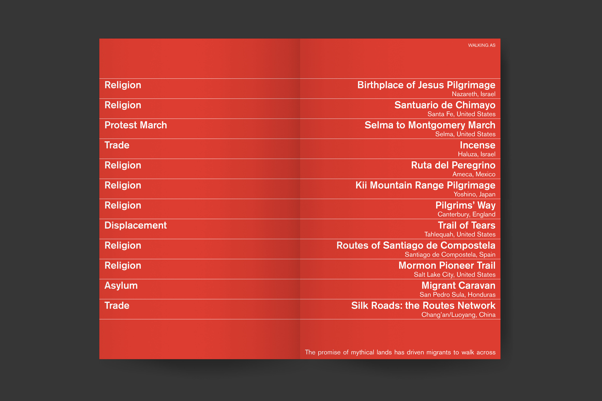
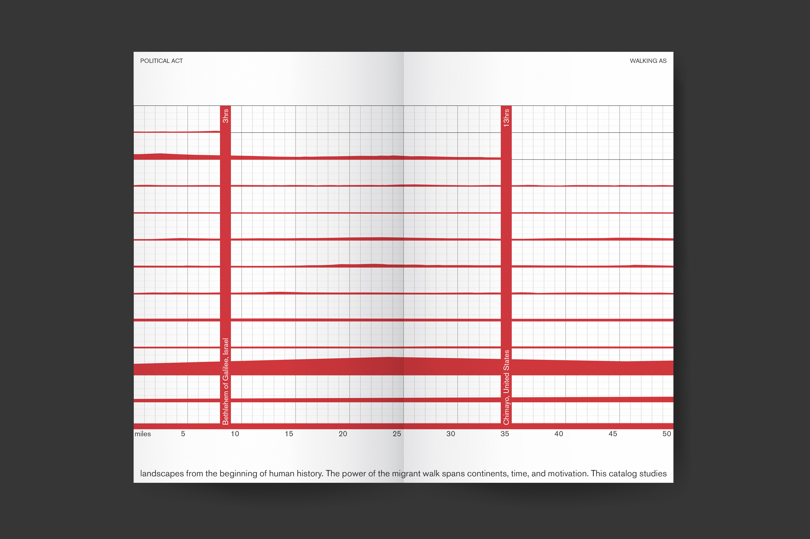
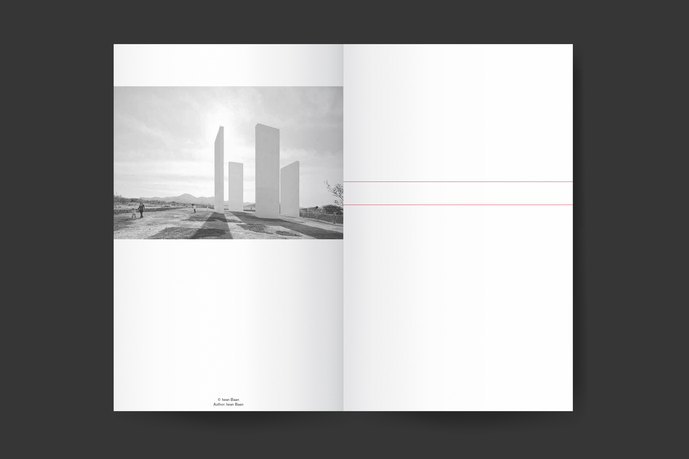
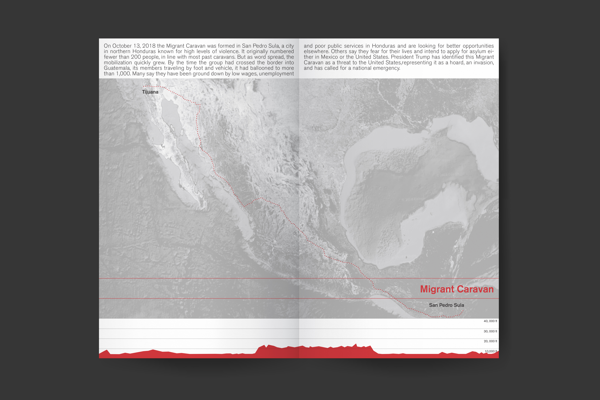
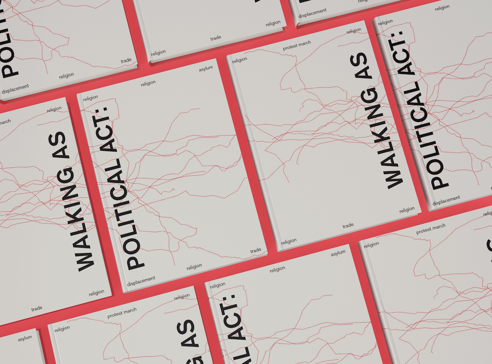

The promise of mythical lands has driven migrants
to walk across landscapes from the beginning of
human history. The power of the migrant walk spans
continents, time, and motivation. This catalog studies
the movement of people from one place to another and
their relationship to the landscape, as a comparative
analysis of significant walks migrants have made
through history. Migration studies often focus on border
crossing and citizenship legal rights but exclude the
experience of the migrant across the landscape. Our
understanding of migration is most often framed by a
top-down rather than a bottom-up representation of the
lived experience. The parameters of this analysis include
a timed hourly estimation of the journey in correlation
to the distance traveled, a measured cartography of
the trajectory, altitude differences shown in sectional
representation, and images of the traveled landscapes.
This catalog explores the aesthetics of this political
walks. If, for the migrant, walking is a political act, how
can representation empower migrants by producing
visibility or, perhaps a more powerfully, invisibility?
Exhibit: Galeria de la Raza - Caminos al Andar
Collaboration with Helena Cardona
Photoshop, Illustrator, InDesign
2019